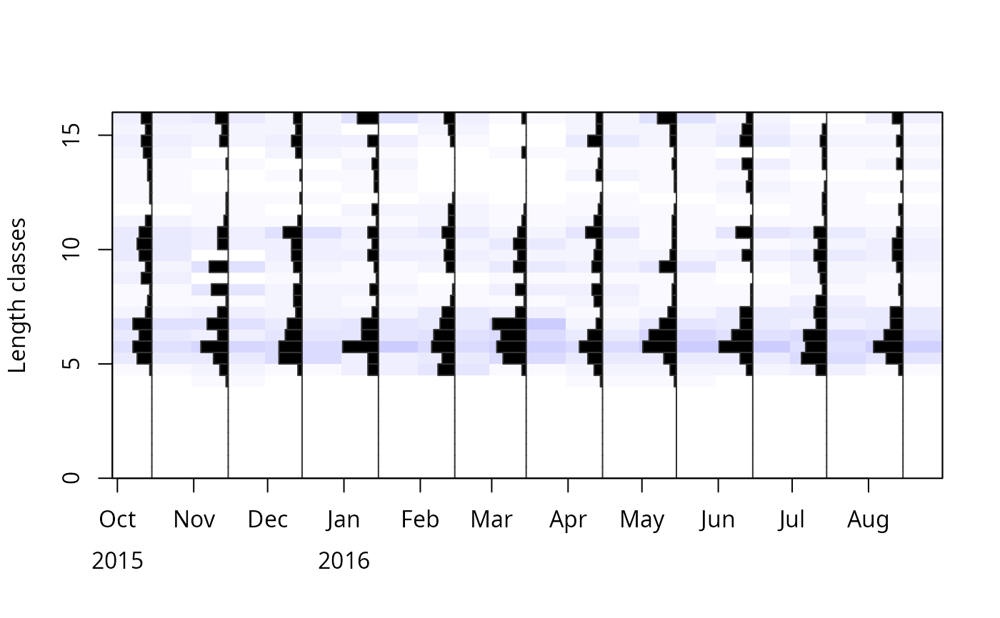

Convert raw length measurements to length frequency data (lfq class).
Usage
lfqCreate(
data,
Lname,
Dname,
Fname = NA,
bin_size = 1,
species = NA,
stock = NA,
comment = "",
Lmin = 0,
length_unit = "cm",
plus_group = FALSE,
aggregate_dates = FALSE,
plot = FALSE
)Arguments
- data
data with at least two columns, one with the length measurements, one with the sampling date
- Lname
name of the length column
- Dname
name of the date column
- Fname
optional; name of column with frequency, in case each length was measured more than one time
- bin_size
size of the bins in cm (Default: 2)
- species
character; to store species name in lfq list
- stock
character; to store stock ID or name in lfq list
- comment
optional character; to store comments conerning the lfq list
- Lmin
minimum length for the midLengths vector (default: 0)
- length_unit
unit of length measurements, either "cm" (default), "mm" or "m"
- plus_group
logical; should a plus group be created? If yes you will be asked to insert the length for the plus group in the console (default: FALSE). Instead of inserting the length of the plus group via the console, the value can be incorporated in a vector, e.g. plus_group = c(TRUE, 30).
- aggregate_dates
logical; indicating whether dates should be lumped in monthly sampling times (assuming sampling always aound the 15th of each month; default is FALSE). More exact lumping can only done manually and then sampling dates provided in data.
- plot
logical; should a graph of lfq data be displayed? (Default: FALSE)
Value
A list of "lfq" class with
dates dates of sampling times (class Date),
midLengths midpoints of the length classes,
catch matrix with catches/counts per length class (row) and sampling date (column).
Examples
# create random data
set.seed(1)
data <- data.frame(length.mm. = sample(c(rpois(300, lambda = 60),
rpois(200, lambda = 100), rpois(100, lambda = 150)),
size = 1000, replace = TRUE),
dates = seq.Date(as.Date("2015-10-02"),as.Date("2016-08-28"),
length.out = 1000))
# create lfq data
lfq_dat <- lfqCreate(data,Lname = "length.mm.", Dname = "dates", aggregate_dates = TRUE,
length_unit = "mm", bin_size = 0.5, plot=TRUE, plus_group=c(TRUE,15.75))
